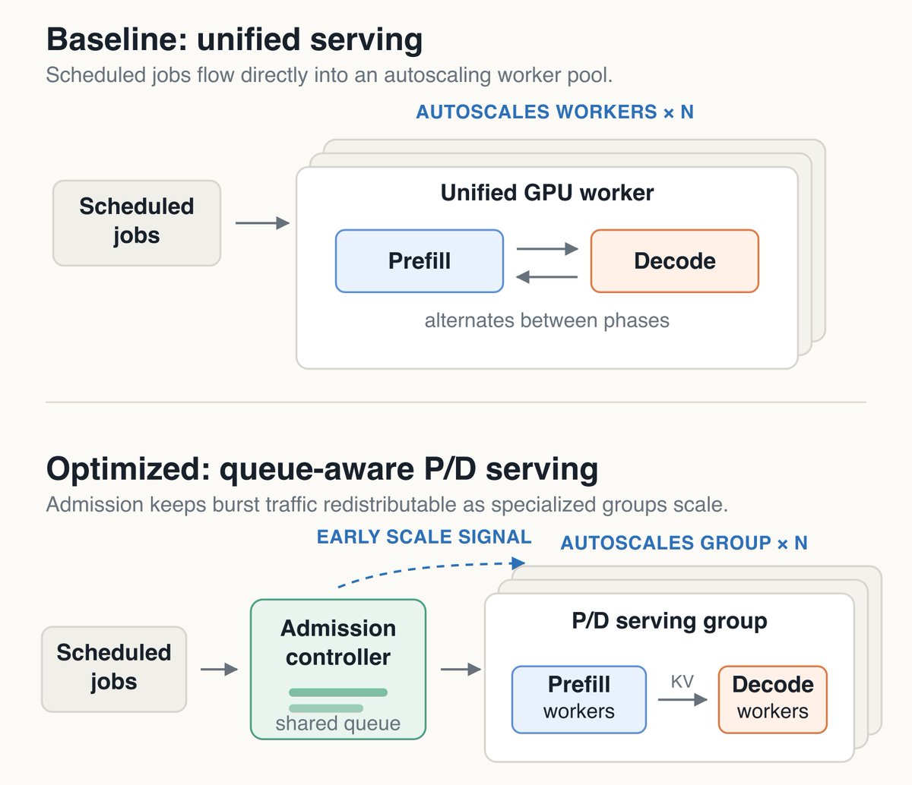
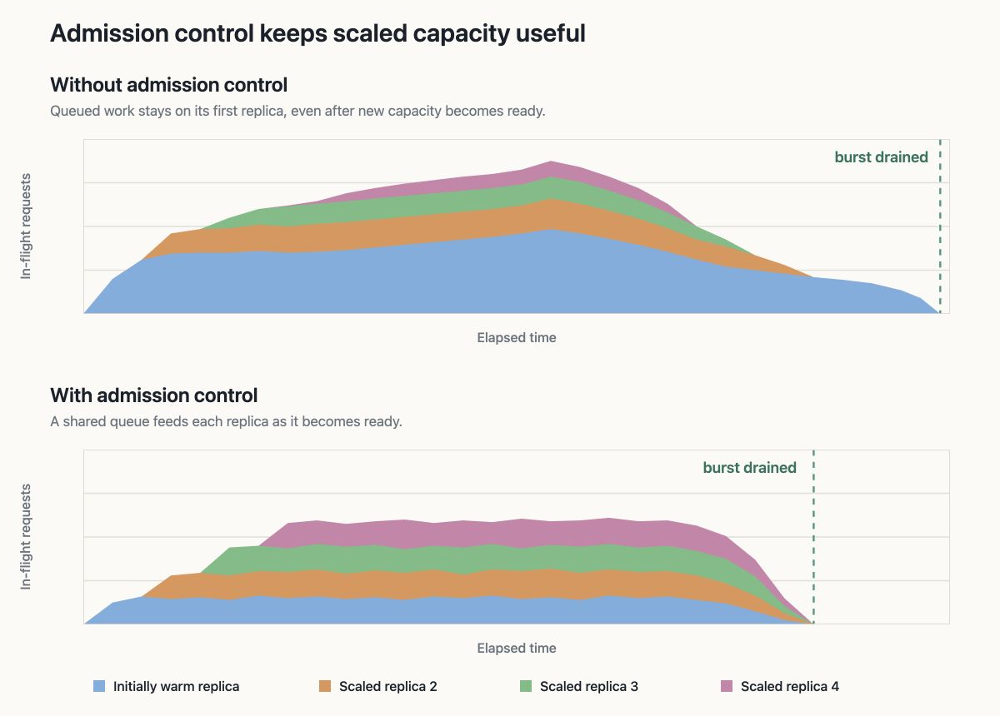

这篇文章来自客户支持AI公司Decagon：告诉我们最大的收益不是来自单个推理优化，而是持续找出一连串服务瓶颈，最终让最大的计划内推理负载集群级GPU效率提升4.7倍。
场景特点：请求是突发式到达、单请求延迟不关键、极看重「每GPU小时处理的token数」。基线是常规自动扩缩容部署。
请求以突发形式到达，单个请求的延迟并非关键。目标是在有限的时间窗口内完成工作，同时最大化GPU效率，即每GPU小时处理的token数。
统计口径很严格：整个扩缩容生命周期内的GPU小时：包括启动、空闲容量、稳态处理与队列排空，不只看峰值。

我们的基线是传统的自动扩缩容部署。优化后的技术栈将更高内存的GPU与三项服务变更相结合：将提示词处理与token生成分离、增加准入控制器以管理流量突发，以及缩短新GPU容量投入使用所需的时间。
最大的收益并非来自单一的推理优化，而是源于消除服务栈中的各类瓶颈。
在Decagon，这一过程使我们在最大的计划内推理工作负载上，集群级GPU效率提升了4.7倍。
Prefill/decode分离已成为高吞吐推理中的一个重要方向，因为其理念直观：一组处理输入提示词并将KV缓存传递给另一组生成响应，每组可针对其特定任务进行调优。
但我们最初的分离部署并未显著提速，一些较大配置反而更慢。这种拆分引入了GPU间的大量数据传输，因此只有在更好的批处理和专用化带来的收益超过该成本时，它才有所帮助。
要在解耦后拿到提升，关键是三个细节：
·形成更大的批次：P/D在每组有足够并发工作把GPU打满时最有效：换更高VRAM的GPU，就能更激进批处理、吃更大的提示块。
·保持状态传输快速：prefill会产出decode需要的一大块中间数据。早期构建缺运行时支持，静默从点内NVLink回退到TCP：系统还能跑，但通信成了暗藏瓶颈。
·匹配拓扑与流量：提示密集型负载适合2P:1D（2 prefill : 1 decode），生成密集型偏好1P:2D，用实测决定每类worker数量。
朴素的自动缩放设置将每个突发直接发送到已经运行的小规模容器集合。这些容器接受请求的速度快于处理速度，导致其推理引擎建立大型内部队列。
当新容器准备就绪时，大部分突发流量已经固定到原始容器，无法重新分配。集群有更多容量，但无法帮助等待在另一个容器内的请求。
我们将该队列移到GPU容器之前。
把原本堆在各GPU容器内的队列，移到容器前：

轻量级准入控制器跟踪每个容器上的排队和活跃工作，限制每个容器接收的新工作量，并将剩余请求保留在共享队列中。随着新容量变得可用，这些请求可以被路由到新容量，而不是停留在过载容器上。
这使每个容器的并发度保持在高位，足以实现高效批处理，但又足够低，使多余请求仍可重新分配。共享队列还让自动扩缩器提前感知到需要更多容量的信号。
新的GPU工作节点需要模型文件才能处理请求。我们开始在容器设置期间将模型文件预取到本地内存，而不是等待每个工作节点从共享存储中获取。配合几项较小的启动优化，这一改动将中位启动时间缩短了近一半。
在流量突发期间，启动每多一分钟，请求就多排队一分钟。更快的启动让新扩容的容量能更早开始处理积压请求。
突发里每多一分钟启动，请求就多排队一分钟；启动提速后，扩容的新worker才能更早接住积压请求。
在整个突发生命周期（从扩容到队列排空）中测量，优化后的技术栈在处理同等生产流量时，GPU小时数减少了约80%。
高效推理需要持续发现并解决服务栈各层的瓶颈。在我们的案例中，约束从批处理形成和内存压力转移到了状态传输、突发准入和工作节点启动。修复一个瓶颈往往会暴露下一个瓶颈。
这种端到端的迭代将一系列服务优化转化为集群级GPU效率4.7倍的提升。
参考：https://x.com/NicholasLiu77/status/2094832111945707546